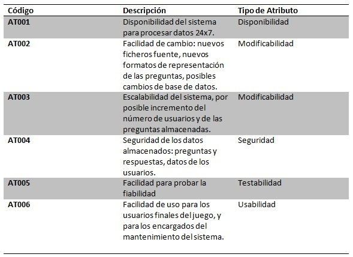
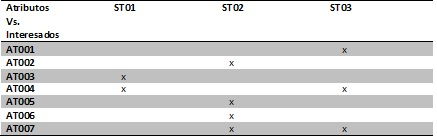

Atributos de Calidad
Para el sistema se han identificado los siguientes atributos de calidad:
- Disponibilidad
- Disponibilidad del sistema para procesar datos 24x7.
- Modificabilidad
- Facilidad de cambio: nuevos ficheros fuente, nuevos formatos de representación de las preguntas, posibles cambios de base de datos.
- Escalabilidad del sistema: incremento del número de usuarios y de las preguntas almacenadas.
- Seguridad
- Seguridad de los datos almacenados: preguntas y respuestas, datos de los usuarios.
- Integridad de los datos almacenados.
- Testabilidad
- Facilidad para probar la fiabilidad de sistema, garantía de que las conversiones (Parser) se han realizado correctamente.
- Usabilidad
- Facilidad de uso para los usuarios finales del juego, y para los encargados del mantenimiento del sistema.

Lista de Atributos de Calidad

Atributos de Calidad e Interesados